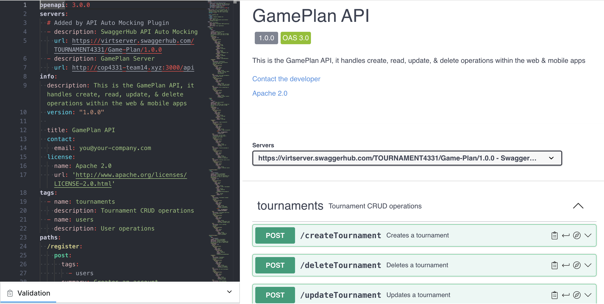

Tournament Manager
Designed and developed a web-based application with user login to manage user-created tournament brackets
- Managed team deadlines and tasks to ensure on-time delivery and quality
- Project Manager for a group of five peers using Agile methodology
- Followed a MERN Stack framework for project development
- Modified API endpoints with React.js to meet project goals
- Prepared and delivered final presentation to professor and peers, including a Gantt Chart and Use Case Diagram
Some of the skills I learned:
- Both working alongside and managing a team
- Basic api knowledge within a MERN stack
- How to organize information within a bracketed system online